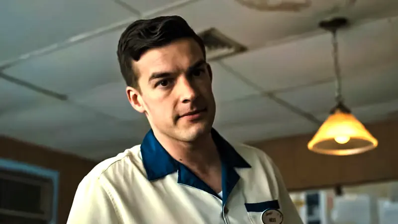

La pelicula llevó 8 años en ser terminada, debido a constantes retrasos y obstaculos que impedían su correcto desarrollo.
En escenas como cuando los animatronicos atacan, se usan efectos de sonidos de los juegos originales.
La película incluye apariciones de algunos influencers reconocidos por haber jugado Five Nights at Freddy's, como Matpat.

Aparición del influencer Matpat en la película
Antes del teaser oficial, hubo una filtración de un trailer de acceso anticipado, donde se podían ver, en algunas tomas, a los animatronicos.
Imágen del teaser filtrado
Fue bien aclamado por el público, sobre todo fanáticos de la saga de videojuegos, pero repudiada por la critica debido a "la falta de terror".
Reseñas de los críticos y del público en la página
Rotten Tomatoes.
La introducción de la película (la escena del arcade) esta basado en los minijuegos que te podes encontrar en los videojuegos si perdes varias veces.
Minijuego que aparece en el juego FNAF 2
En algunas escenas se puede ver el muñeco de un niño con un globo, un personaje del segundo videojuego.
Balloon Boy, animatronico que aparece en el segundo juego de la saga
Antes de que William Afton se convirtiera en Springtrap, este dice "I always come back", una frase icónica de este
personaje.
Fue nominada a varios premios, uno curiosamente llamado "Worst Supporting Actress" (peor actriz de reparto).
Sin embargo, tambien fue nominada a la película drama del año.
Fuente: IMDb
Junto a otras películas como Sonic The Hedgehog, Detective Pikachu y Super Mario Bros, fue una de las películas que
incentivaron a hacerse mas adaptaciones de videojuegos.